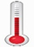

<div class="col graph1"  ng-controller="graph_ctrl_1">
    <div class="row banner">
        <div class="col"><span>noise level db</span></div>
        <div class="col"><span>temperature</span></div>
    </div>
    <div class="row">
        <div class="col">
            <canvas id="graph" 
            class="chart chart-line" 
            chart-data='data' 
            chart-labels="labels" 
            chart-dataset-override="datasetConfig"
            chart-options="option"
            height="280"
            ></canvas>
        </div>
    </div>
</div>